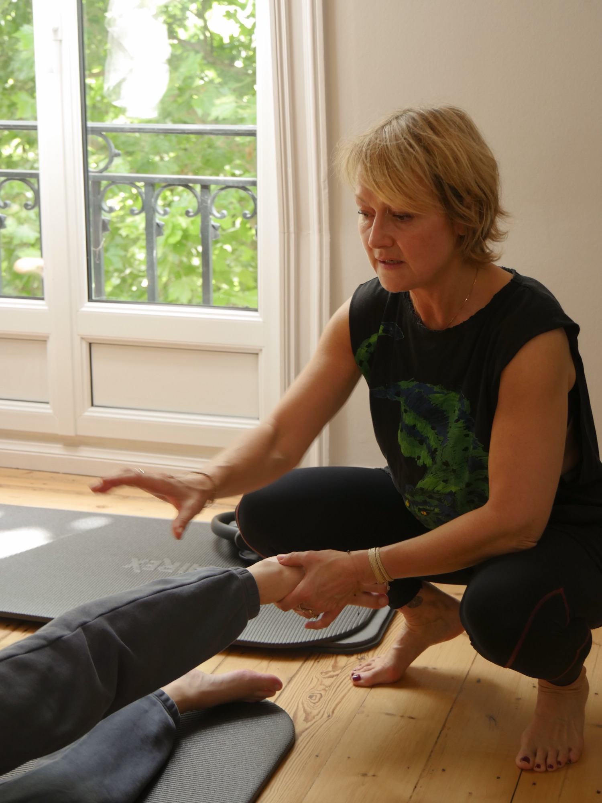

Mal de dos & lombalgies
Travail postural profond, mobilité du bassin, renforcement des muscles stabilisateurs. Approche douce, ciblée, avec De Gasquet pour les douleurs lombaires installées.
Selon votre histoire, vos douleurs, vos objectifs et le moment de votre vie, je combine plusieurs approches, toutes complémentaires, toutes au service de votre corps.
Chaque corps a son histoire, ses points sensibles, ses forces. Aucun programme préfabriqué ne tient compte de ça.
C'est pour cette raison que j'ai construit, au fil des années, une approche intégrative, un ensemble de méthodes que je combine pour répondre précisément à ce dont vous avez besoin. Mal de dos chronique, retour au sport après une pause, péri-ménopause, posture fatiguée, stress accumulé : chaque situation appelle une approche différente.
Le travail commence toujours par un bilan, pour comprendre, observer, écouter. Ensuite seulement, le programme se construit, séance après séance, en s'ajustant.

Tout commence ici. Une séance dédiée à comprendre votre corps, vos habitudes, votre histoire, pour construire un programme qui vous ressemble vraiment.
Sans bilan préalable, l'accompagnement reste générique. Avec, il devient véritablement le vôtre.
Observation statique et dynamique : alignement, asymétries, points de tension installés.
Qualité du souffle, mobilité du diaphragme, schéma respiratoire au repos et au mouvement.
Articulations, chaînes musculaires, amplitudes, ce qui se bouge librement, ce qui résiste.
Posture de travail, sommeil, activité physique, gestes du quotidien qui marquent le corps.
Chacune de ces approches apporte une réponse spécifique. Selon votre profil, j'en mobilise plusieurs, parfois toutes, pour construire votre programme.
Approche posturale et respiratoire du périnée et des abdominaux. Précieuse pour le post-partum, les douleurs lombaires, la péri-ménopause, et toute situation où le centre du corps doit se réparer.
Travail des liens musculaires qui parcourent le corps en chaînes, pas muscle par muscle. Permet de comprendre comment une douleur de pied peut venir du bassin, ou un mal de cou d'une tension dans les hanches.
Le souffle comme outil thérapeutique : régulation du système nerveux, libération des tensions diaphragmatiques, soutien postural. La respiration n'est jamais accessoire, elle structure tout.
Relaxation dynamique, ancrage, visualisation, gestion des émotions. Pour le stress, l'anxiété, le sommeil, mais aussi la préparation d'un événement ou l'accompagnement d'une période de vie difficile.
Apprendre à se servir de son corps au quotidien : se baisser, se relever, porter, marcher, dormir. C'est dans les gestes ordinaires que se cachent les mauvaises habitudes, et la transformation.
Chaque programme est unique. Je choisis, dose, séquence ces outils selon vos besoins du moment, et je les fais évoluer au fil de votre progression.
Certaines situations demandent une approche pensée spécifiquement. Voici les accompagnements pour lesquels je suis formée et que je pratique régulièrement au studio.
Travail postural profond, mobilité du bassin, renforcement des muscles stabilisateurs. Approche douce, ciblée, avec De Gasquet pour les douleurs lombaires installées.
Respiration, sophrologie, Sophrolates, apprendre à réguler son système nerveux. Pour le stress chronique, l'anxiété, les moments de vie qui débordent.
Après une longue pause, une blessure, une grossesse, un arrêt prolongé. Reconstruire progressivement, sans précipitation, sur des bases solides.
Une période où le corps change profondément. Accompagnement spécifique pour la posture, les os, le périnée, le sommeil, l'humeur, avec De Gasquet et sophrologie.
Pour celles et ceux qui sentent que leur posture leur fait défaut, au bureau, dans le quotidien, dans le miroir. Reconstruire un alignement juste, durable.
Avant que ça fasse mal. Un travail patient pour renforcer ce qui va lâcher, mobiliser ce qui se raidit, équilibrer ce qui tire, pour des années de mouvement libre.
L'accompagnement personnalisé commence toujours par une séance Bilan/Découverte à 45 € (valable une fois), posture, respiration, mobilité, habitudes corporelles. C'est sur cette base que se construit votre programme.